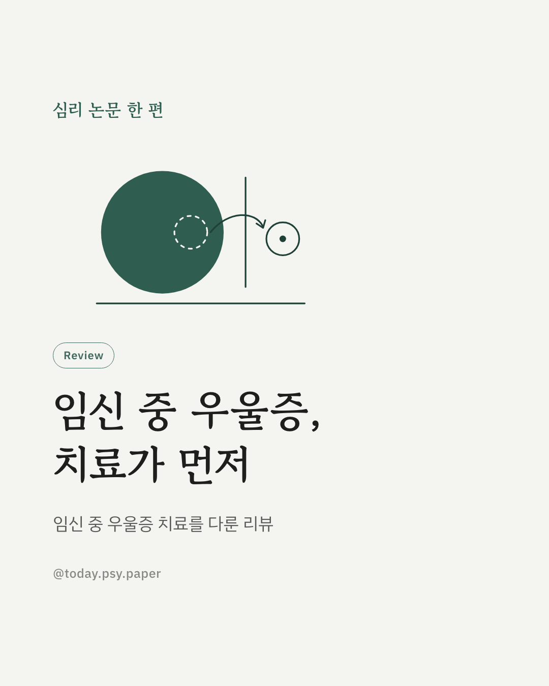
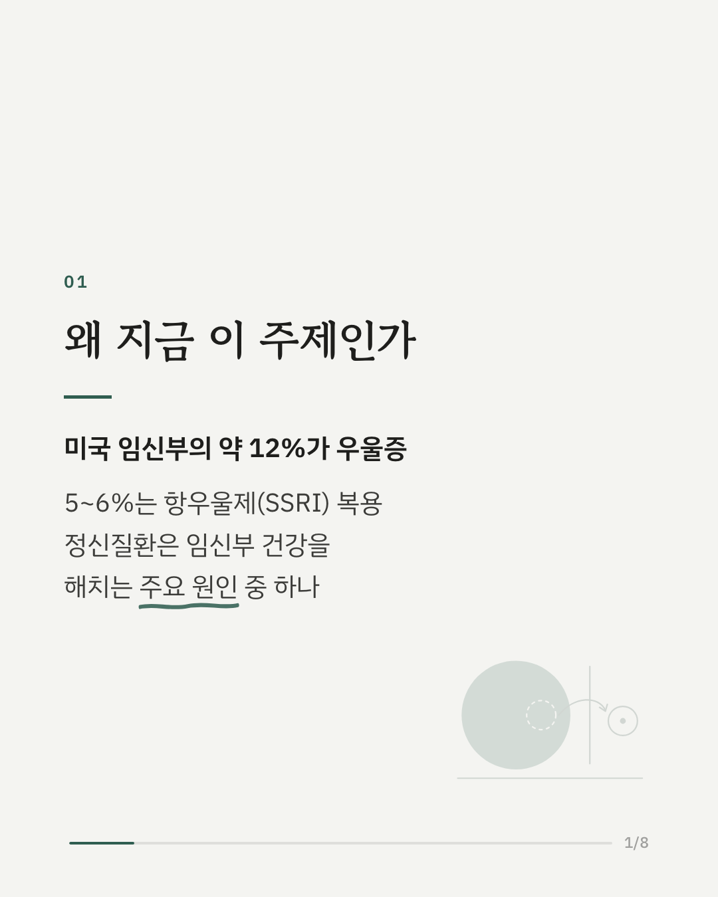
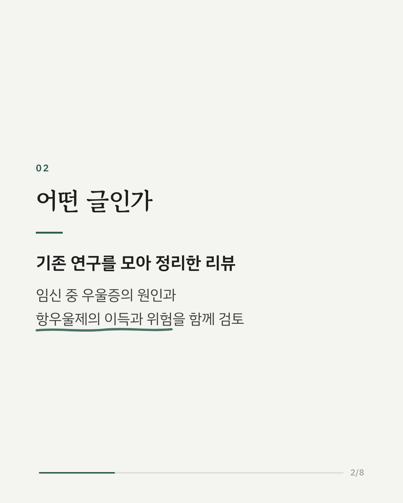
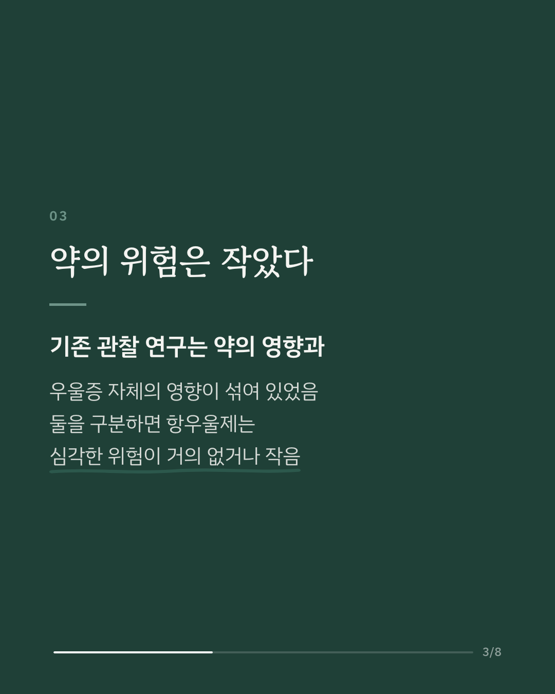
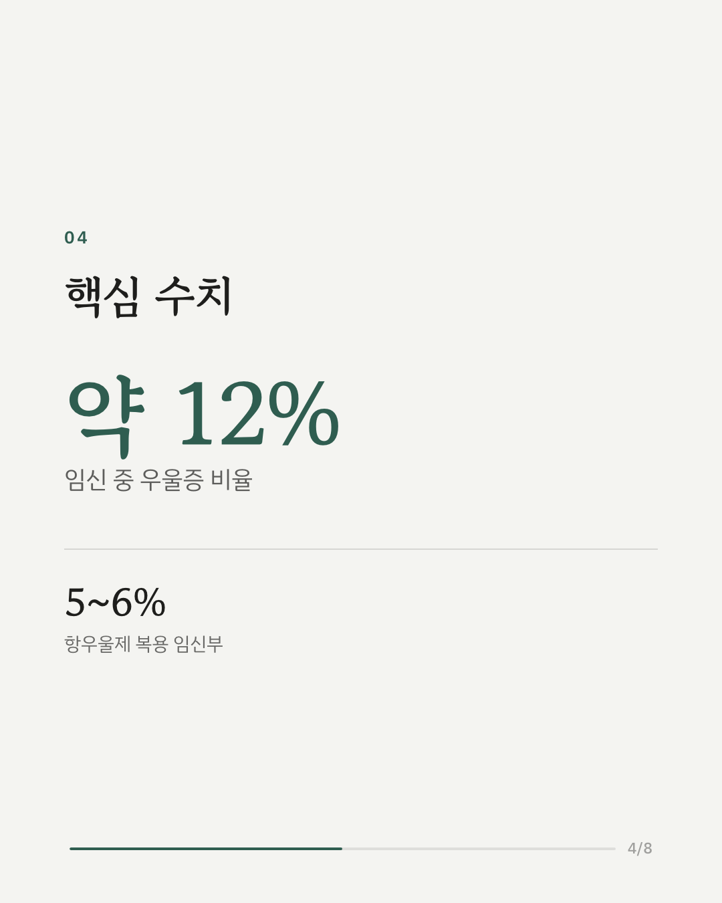
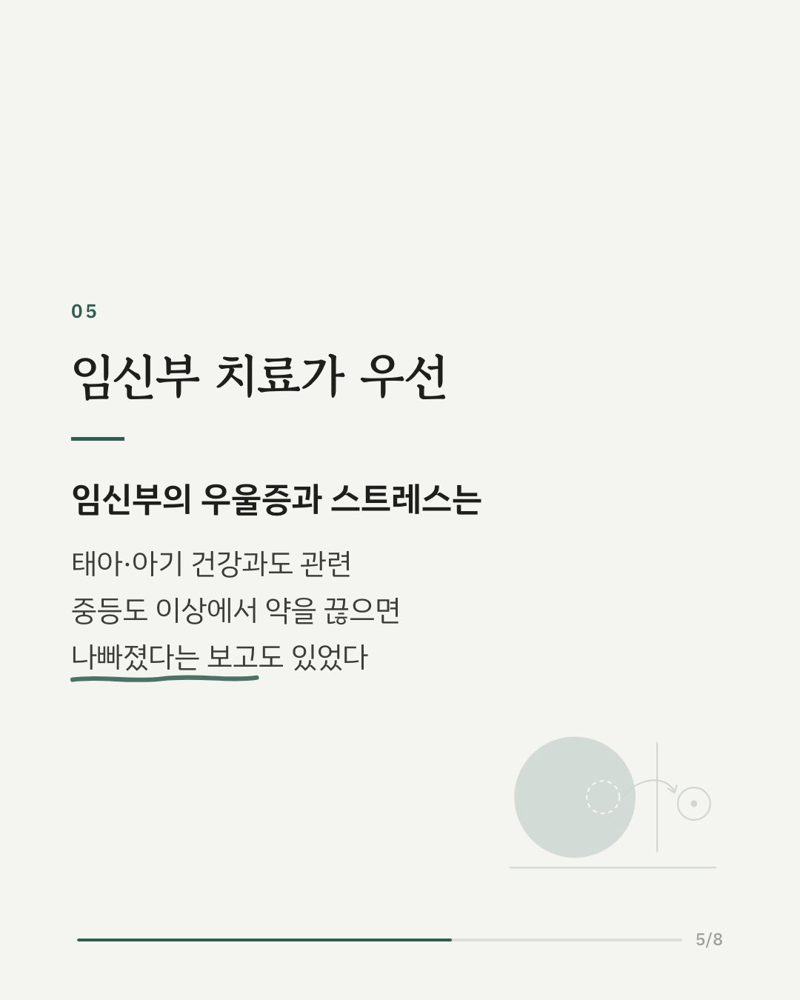
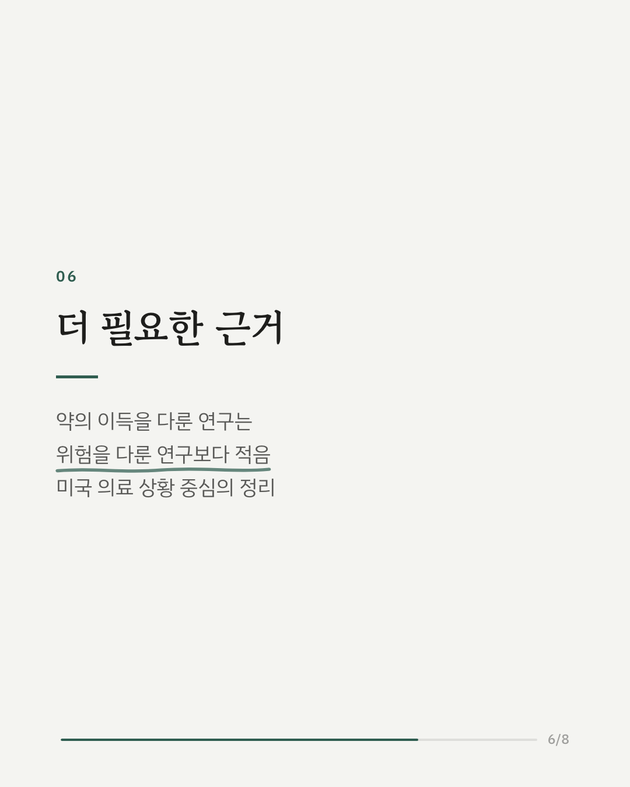
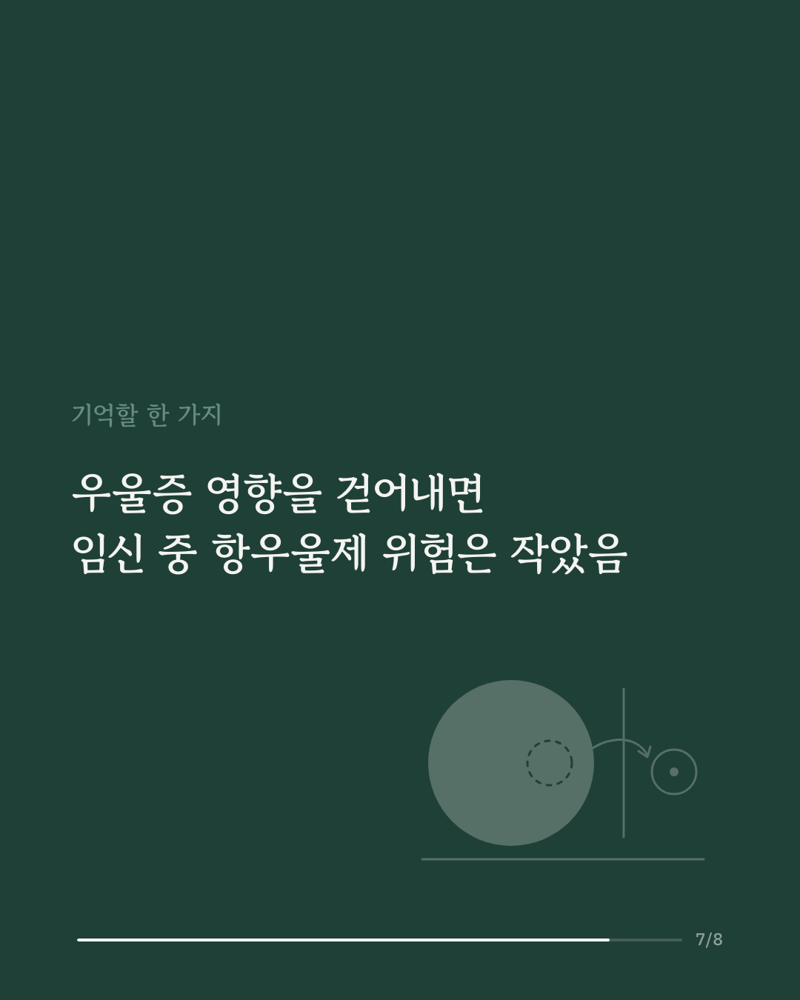
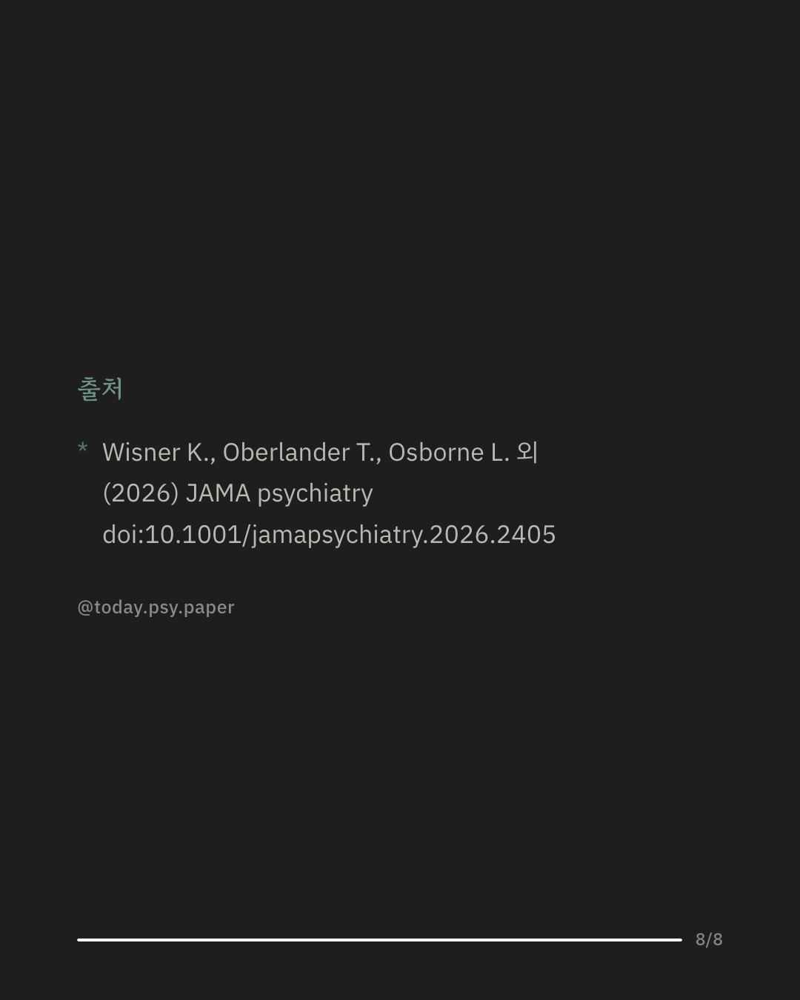

미국에서는 임신부의 약 12%가 우울증을 겪고, 5~6%가 항우울제(SSRI)를 복용합니다. 이 리뷰는 임신 중 우울증 치료에 관한 기존 연구를 모아 항우울제의 이득과 위험을 함께 정리했습니다. 그동안 관찰 연구에서는 약의 영향과 우울증 자체의 영향이 뒤섞여 있었습니다. 저자들은 둘을 구분해서 보면 항우울제가 심각한 부작용 위험을 거의 높이지 않거나 높이더라도 작은 수준이라고 정리했습니다. 반대로 중등도 이상 우울증에서 약을 끊은 뒤 상태가 나빠진 사례들이 보고됐습니다. 임신부의 우울증과 스트레스는 태아·아기 건강과도 관련이 있어, 저자들은 임신부 정신건강 치료를 우선해야 한다고 강조합니다. 치료하지 않았을 때의 위험, 치료의 이득, 약물 노출의 위험을 함께 따져 보는 의사결정 과정도 제안합니다. 다만 항우울제의 이득을 다룬 연구는 위험을 다룬 연구보다 아직 적습니다. 출처: JAMA Psychiatry (2026), 'Depression and SSRI Treatment During Pregnancy—Prioritizing Maternal Mental Health' DOI: 10.1001/jamapsychiatry.2026.2405 #임상심리 #정신건강정보 #심리학연구 #논문리뷰 #임신우울증 #주산기우울증 #항우울제
python3 publish.py 42584886